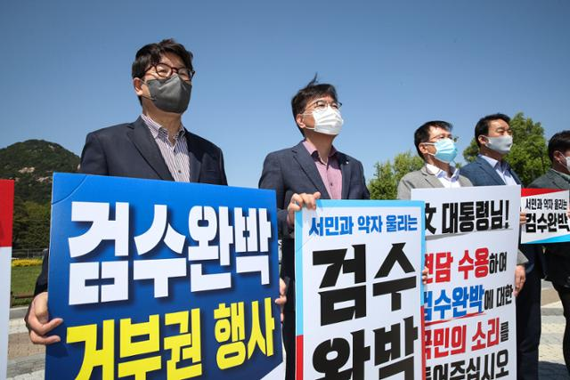

검찰 수사권 완전 박탈(약칭 검수완박)은 문재인 정부 및 더불어민주당이 추진하는 검찰개혁의 '최종 목표'이자 관련 입법 시도 등을 아울러 부르는 명칭이다.
검수완박이 이뤄지면 검찰은 법률에서 정한 예외적인 경우를 제외하고는 수사 업무를 수행하지 못하고 기소 및 공판 업무를 전담하게 된다. 즉, 일부 수사 권한이 유지된다는 점에서 수사권의 완전한 박탈은 아니지만, 유지되는 수사권을 행사하는 경우에도 검사는 '사법경찰관으로 간주'되어 이를 행사하여야 하기 때문에, 그 범위나 내용 측면에서 수사권이 실질적으로 완전히 폐지되는 것으로 볼 수 있다.